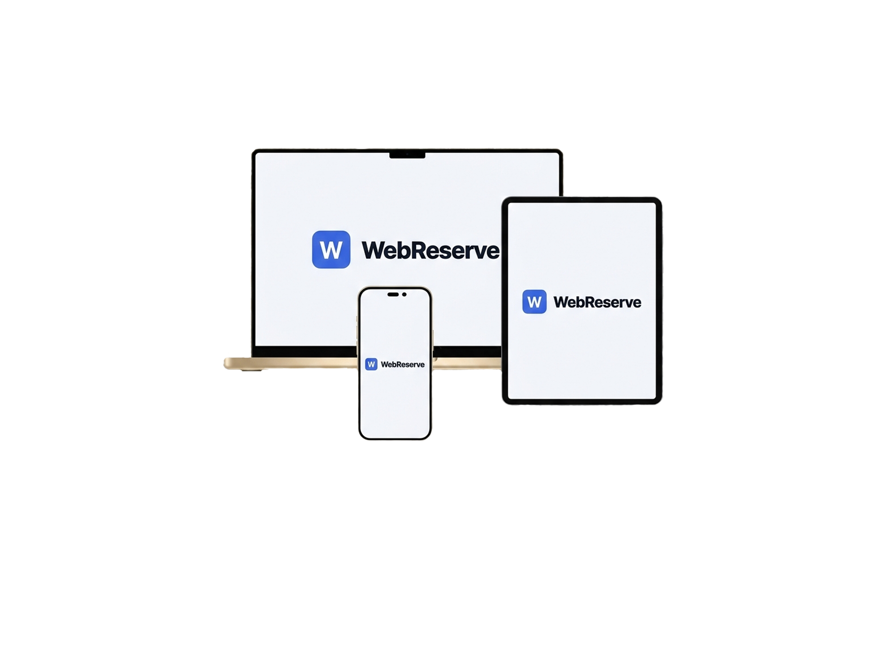

Ihre Webseite –
professionell betreut
ab 30€/Monat
Design, Hosting, SEO, Backend-Software und laufende IT-Betreuung – alles aus einer Hand. Was bisher nur Großunternehmen sich leisten konnten, gibt es jetzt für jeden Betrieb.
Was früher nur Großunternehmen konnten –
jetzt für Ihren Betrieb.
Eigene IT-Abteilung, laufendes Monitoring, individuelle Software, professionelles Webdesign – das war lange nur für Konzerne erschwinglich. WebController macht das möglich: echte IT-Dienstleistung zum fairen Monatsbeitrag.
24/7 Überwachung
Ihre Webseite wird kontinuierlich auf Performance und Sicherheit überwacht – automatisch und ohne Aufpreis.
Laufende Updates
Technische Updates, rechtliche Änderungen, SEO-Anpassungen – alles wird proaktiv erledigt.
Eigenes Backend
Mit dem WebController erhalten Sie ein vollständiges Backend-System – Formulare, Reservierungen und mehr.
Kontinuierliche Anpassung
Ihre Webseite wächst und verbessert sich mit Ihrem Unternehmen – sie wird nie vergessen.
Ihr Backend – direkt von WebController.
Jeder Kunde bekommt sein eigenes Backend. Verwalten Sie Reservierungen, Grundrisse, Formulare, Webseiten-Inhalte und Statistiken – alles an einem Ort, ohne technisches Vorwissen.
- Eigene Formulare erstellen & Anfragen direkt empfangen
- Reservierungssystem für Gastronomie & Dienstleister
- Tischbelegung, Öffnungszeiten & Verfügbarkeiten verwalten
- Gäste können Tische visuell auswählen & VIP-Status erhalten
- Kundendaten und Buchungen übersichtlich einsehen
- Funktioniert auf Mac, iPad und iPhone – überall

Dashboard – Alles im Blick
Das Dashboard zeigt Ihnen alle Reservierungen für den heutigen Tag auf einen Blick. Wählen Sie andere Tage aus, tauschen Sie Tischbelegungen per Drag & Drop oder setzen Sie Platzierungen auf Lock – damit das System die maximale Auslastung für Sie berechnet.
- Tagesaktuelle Reservierungen mit Detailansicht
- Tische tauschen & Platzierungen optimieren lassen
- KI-gestützte Auslastungsoptimierung mit Lock-Funktion
- Interaktiver Grundriss mit Echtzeit-Belegung
Reservierungen verwalten
Erstellen Sie manuelle Reservierungen per E-Mail oder Telefonnummer, wenn Gäste anrufen. Sehen Sie alle Buchungen für den aktuellen Tag und stornieren Sie bei Bedarf mehrere Reservierungen auf einmal – z.B. bei einem Wasserschaden. Alle betroffenen Gäste erhalten automatisch eine Stornierungsmail mit Ihrer persönlichen Notiz.
- Manuelle Reservierungen mit E-Mail oder Telefon
- Massen-Stornierung mit automatischer Benachrichtigung
- Telefon-Reservierungen werden markiert & nachverfolgt
- Automatische Bewertungsmail nach dem Besuch
Formulare & Events
Erstellen Sie individuelle Formulare für Ihre Webseite – Anfragen für Feiern, Bewerbungsformulare oder was auch immer Sie brauchen. Außerdem können Sie Events anlegen, z.B. für Konzerte oder Veranstaltungen, direkt über Ihre Webseite.
- Drag & Drop Formular-Builder
- Anfragen für Feiern, Bewerbungen & mehr
- Event-Erstellung für Konzerte & Veranstaltungen
- Direkte Integration in Ihre Webseite
Deploy-Portal
Ordnen Sie Änderungen an Ihrer Webseite direkt über das Portal an. Ihre Wünsche werden per E-Mail abgeschickt und von einer KI lokal umgesetzt. Schauen Sie sich die Vorschau an und deployen Sie mit einem Klick – z.B. neue Speisekarte oder ein neues Formular.
- Änderungswünsche per Formular einreichen
- KI-gestützte Umsetzung in Echtzeit
- Vorschau prüfen vor dem Live-Gang
- Ein-Klick-Deployment auf Ihre Domain
Einstellungen & Grundriss
Konfigurieren Sie alles: Öffnungszeiten, Schließtage, Stornierungsfristen und mehr. Im Grundriss-Editor bauen Sie Ihren Gastraum nach – mit Tischen, Wänden, Fenstern und Textfeldern. Erstellen Sie Tischkombinationen, tragen Sie Kinderstühle und Rollstuhlzugänge ein. Das System berücksichtigt all das bei der Auslastungsoptimierung.
- Visueller Grundriss-Editor mit Drag & Drop
- Tischkombinationen, Kinderstühle & Barrierefreiheit
- Öffnungszeiten, Schließtage & Sonderdaten
- Analytics mit Auto-Versand & PDF/CSV-Export
Was ist im Abo enthalten?
Für 30€ im Monat erhalten Sie das vollständige Paket – von der Erstellung bis zur dauerhaften Betreuung.
Webdesign & Entwicklung
Individuelle Webseite nach Ihren Wünschen. Modernes Design, responsive auf allen Geräten.
Cloudflare Hosting
Schnelles, sicheres Hosting mit globalem CDN, SSL-Verschlüsselung und DDoS-Schutz.
Laufende SEO-Optimierung
Regelmäßige Analyse und Optimierung für bessere Rankings bei Google und KI-Suchmaschinen.
Rechtliche Sicherheit
Impressum und Datenschutz werden erstellt und bei Gesetzesänderungen automatisch aktualisiert.
Inhaltspflege
Texte ändern, Bilder tauschen, neue Seiten hinzufügen – per E-Mail anfragen, in 24h erledigt.
Monitoring & Wartung
Performance- und Security-Checks, Backups, Updates und 24/7-Überwachung inklusive.
Ihre Webseite ist nie allein
Wir überwachen, warten und optimieren kontinuierlich – proaktiv, nicht erst wenn etwas kaputt ist.
Uptime-Monitoring
Rund um die Uhr überwacht. Bei Ausfällen reagieren wir sofort – bevor Ihre Kunden es bemerken.
Security-Checks
Sicherheits-Scans, Malware-Prüfungen und DDoS-Schutz via Cloudflare – Ihre Daten sind sicher.
SEO & Performance
Monatliche Analyse Ihrer Rankings, Ladezeiten und Nutzerverhalten mit kontinuierlicher Anpassung.
Automatische Backups
Tägliche Backups – im Notfall können wir den Stand von gestern in Minuten wiederherstellen.
Häufige Fragen
Alles, was Sie wissen möchten – kurz und klar beantwortet.
Professionelle IT für Ihren Betrieb
Andere verlangen tausende Euro für eine Webseite und extra für jede Änderung. Bei WebController bekommen Sie das Komplettpaket: Design, Hosting, Backend-Software, Monitoring und persönliche Betreuung.
30€/Monat – fertig.
Unverbindlich anfragen